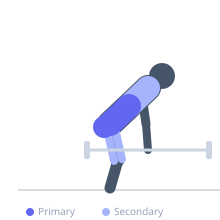
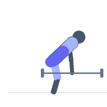

Exercise guide / Block Pull
Block Pull
The block pull is similar to the rack pull but with the barbell resting on blocks or bumper plates rather than rack pins. This setup allows the bar to remain free-floating, more closely replicating full deadlift mechanics, while reducing the range of motion to overload a specific portion of the pull. Block pulls are commonly used in Olympic weightlifting and powerlifting to build strength in a specific phase of the deadlift without the bar being in a mechanically fixed position.
Primary muscles
erector spinae
gluteus maximus
Secondary muscles
trapezius upper
biceps femoris long head
rectus femoris
Stabilizers
transverse abdominis
Equipment
Standard Barbell
Optional
Lifting Straps


Starting position
- Stack bumper plates or wooden blocks to the desired height (typically mid-shin to below-knee). Rest a loaded barbell on the blocks. Stand behind the bar as you would for a conventional deadlift.
Setup
- Stack rubber bumper plates or wooden pulling blocks to the target height. Ensure the stacking surface is stable and will not tip. Load the barbell on top.
Steps
- Step 1: Set up with feet hip-width apart, the bar over mid-foot. Grip the bar with a double overhand or mixed grip.
- Step 2: Hinge to the bar, set the back with a neutral spine, and brace the core.
- Step 3: Push the floor away and pull the bar in a straight vertical line.
- Step 4: Lock out the hips fully at the top by driving the hips through.
- Step 5: Lower the bar under control to the blocks, reset, and repeat.
Coaching cues
- Drive the floor away with both feet equally
- Bar stays in contact with the thighs all the way up
- Hips and shoulders rise at the same rate
Breathing
- Inhale and brace before each rep. Exhale at lockout.
Range of motion
- From block height to full lockout. The partial ROM is intentional for overload purposes.
Tempo
- Controlled pull, locked top position (1–2s), controlled 2s lowering to blocks.
Common mistakes
- Letting the bar drift forward away from the body
- Not resetting posture and brace between reps — each rep should be treated as a new lift
- Hyperextending the lower back at lockout
Safety
- Ensure the block or plate stack is completely stable before loading
- Block height should be chosen based on the specific sticking point being targeted
Training
- strength: 1–5 reps
- hypertrophy: 5–8 reps
- strength: 4–6 sets
- hypertrophy: 3–5 sets
- Rest: {'strength': 240, 'hypertrophy': 150}